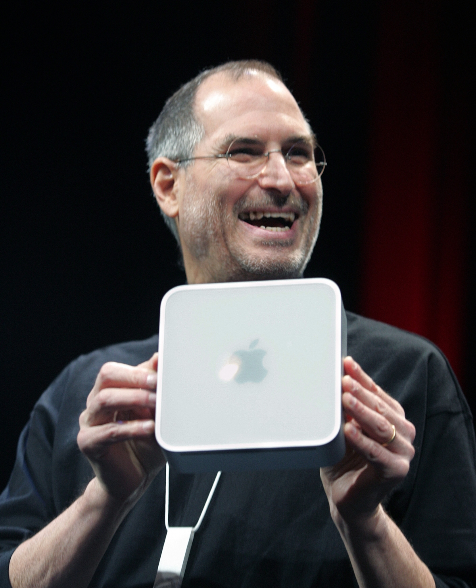

The Apple II
The Types
The Creators
The Apple II was created by Steve Jobs and Steve Wozniak. The two founded Apple Inc. together and the apple two is considered to be the invention that revolutionized the computer industry.
Steve Jobs
Steven Paul “Steve” Jobs was bron on October 5, 2011. He was an American entrepreneur, businessman, inventor, and industrial designer. He was the co-founder, chairman, and chief executive officer (CEO) of Apple Inc.; CEO and majority shareholder of Pixar; a member of The Walt Disney Company’s board of directors following its acquisition of Pixar; and founder, chairman, and CEO of NeXT. Jobs and Apple co-founder Steve Wozniak are widely recognized as pioneers of the microcomputer revolution of the 1970s and 1980s.
Steve Wozniak
Stephen (or Stephan) Gary “Steve” Wozniak, born August 11, 1950, nicknamed “Woz”, is an American inventor, electronics engineer, programmer, and technology entrepreneur who co-founded Apple Inc. He is known as a pioneer of the personal computer revolution of the 1970s and 1980s, along with Apple co-founder Steve Jobs.

Back to the Top